.png)
Admin Panelلوحة التحكم للمشرف
-
Admin Loginتسجيل دخول المشرف
You can access your admin dashboard by navigating to yourstore.keddily.com/admin. Then you will see the option to log in to the admin panel, as shown below:يمكنك الوصول إلى لوحة تحكم المشرف عن طريق الانتقال إلى yourstore.keddily.com/admin. سترى بعد ذلك خيار تسجيل الدخول إلى لوحة التحكم، كما هو موضح أدناه:
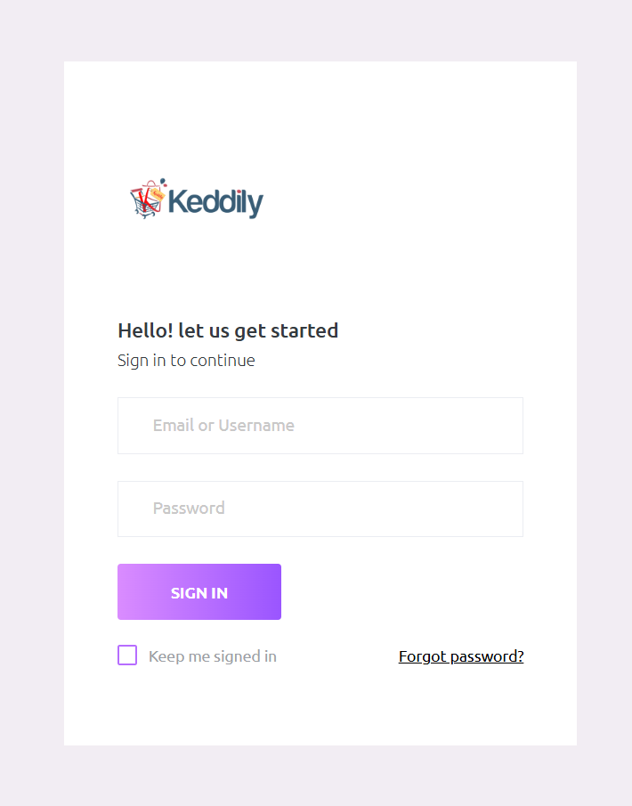Figure 1: The Admin Panel login screen.الشكل ١: شاشة تسجيل الدخول إلى لوحة التحكم.
Here are the **default admin login details**:فيما يلي **تفاصيل تسجيل الدخول الافتراضية للمشرف**:
- Username:اسم المستخدم: admin
- Password:كلمة المرور: 12345678
Important Security Note:ملاحظة أمنية هامة: Always remember to change the default admin password and username immediately after your first login to ensure the security of your website. تذكر دائمًا تغيير كلمة المرور واسم المستخدم الافتراضيين للمشرف فورًا بعد تسجيل الدخول الأول لضمان أمان موقعك. -
Profile Settingsإعدادات الملف الشخصي
It’s very easy to edit your admin profile info. After logging in to the admin panel, check the top right corner for the "Edit Profile" menu option, as shown in the image below:من السهل جدًا تعديل معلومات ملفك الشخصي. بعد تسجيل الدخول إلى لوحة التحكم، ابحث في الزاوية العلوية اليمنى عن خيار قائمة "تعديل الملف الشخصي"، كما هو موضح في الصورة أدناه:
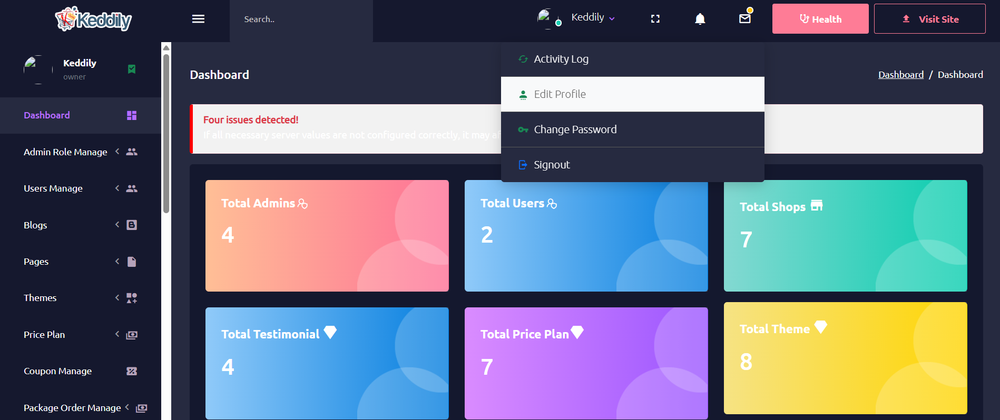Figure 2: Location of the 'Edit Profile' menu.الشكل ٢: موقع قائمة "تعديل الملف الشخصي".
Now you can change your profile info as you want, including your name, email, mobile number, and profile image. We recommend changing the default admin username and email address.يمكنك الآن تغيير معلومات ملفك الشخصي كما تريد، بما في ذلك الاسم والبريد الإلكتروني ورقم الجوال وصورة الملف الشخصي. نوصي بتغيير اسم المستخدم وعنوان البريد الإلكتروني الافتراضيين للمشرف.
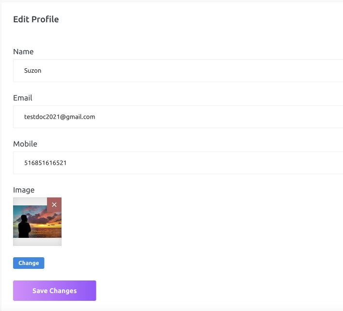Figure 3: The 'Edit Profile' form.الشكل ٣: نموذج "تعديل الملف الشخصي".
-
Password Changeتغيير كلمة المرور
To change your password, select the "Change Password" option from the same menu dropdown in the top right corner of the admin panel. This will take you to a page where you can update your current password to a new one. You will need to enter your old password to add a new one for your admin account. If you forget your current password, we suggest using the "Forgot Password" option from the login form.لتغيير كلمة المرور، حدد خيار "تغيير كلمة المرور" من نفس القائمة المنسدلة في الزاوية العلوية اليمنى من لوحة التحكم. سينقلك هذا إلى صفحة حيث يمكنك تحديث كلمة مرورك الحالية إلى كلمة مرور جديدة. ستحتاج إلى إدخال كلمة مرورك القديمة لإضافة كلمة مرور جديدة لحساب المشرف الخاص بك. إذا نسيت كلمة مرورك الحالية، نقترح استخدام خيار "نسيت كلمة المرور" من نموذج تسجيل الدخول.
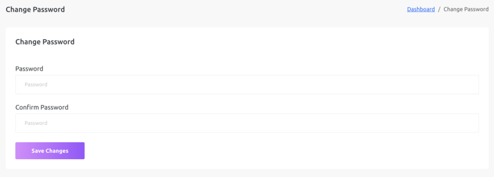Figure 4: The 'Change Password' form.الشكل ٤: نموذج "تغيير كلمة المرور".
We recommend changing your default admin password.نوصي بتغيير كلمة المرور الافتراضية للمشرف.
Email Settingsإعدادات البريد الإلكتروني
-
SMTP Setupإعداد SMTP
SMTP settings are crucial for your CMS to function correctly. Without setting up your SMTP and Google reCAPTCHA, none of your website's forms will work.إعدادات SMTP ضرورية ليعمل نظام إدارة المحتوى لديك بشكل صحيح. بدون إعداد SMTP و Google reCAPTCHA، لن تعمل أي من نماذج موقع الويب الخاص بك.
To configure your SMTP settings, go to "General Settings > Smtp Settings". You will see the following fields:لتهيئة إعدادات SMTP، انتقل إلى "الإعدادات العامة > إعدادات Smtp". سترى الحقول التالية:
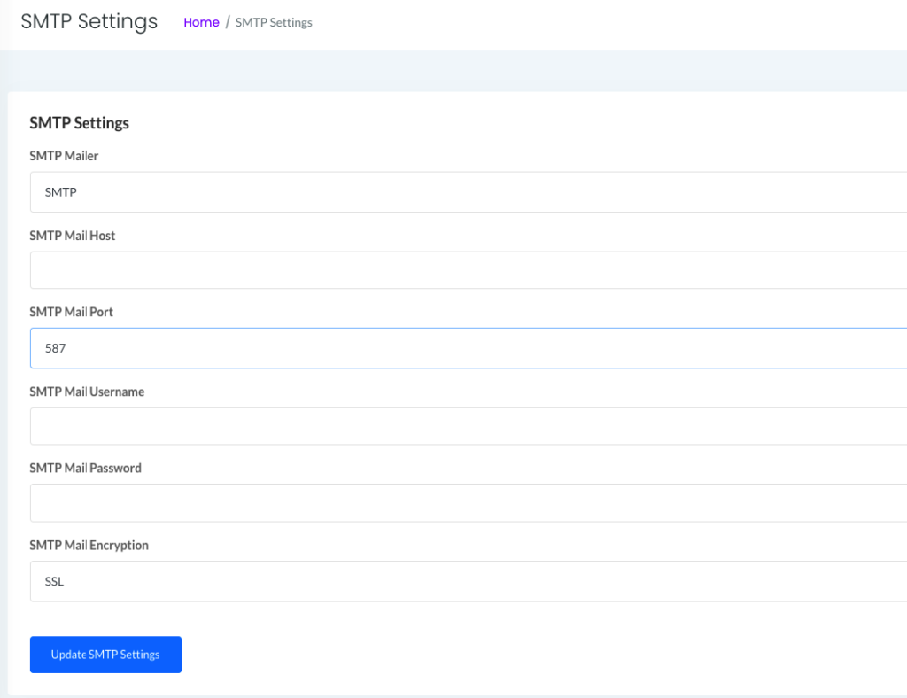Figure 5: The SMTP Settings configuration page.الشكل ٥: صفحة تهيئة إعدادات SMTP.
SMTP Mailer:برنامج إرسال SMTP:
Select one of the following as your SMTP mailer or SMTP driver:حدد أحد الخيارات التالية كبرنامج إرسال SMTP أو مشغل SMTP:
- SMTP
- Mailgun
- SendMail
- PostMark
SMTP Mail Host:مضيف بريد SMTP:
Enter your SMTP mail host.أدخل مضيف بريد SMTP الخاص بك.
SMTP Mail Port:منفذ بريد SMTP:
Select your SMTP mail port from the list:حدد منفذ بريد SMTP الخاص بك من القائمة:
- 587
- 465
- 25
SMTP Mail Username:اسم مستخدم بريد SMTP:
Enter your SMTP username or webmail address.أدخل اسم مستخدم SMTP أو عنوان البريد الإلكتروني الخاص بك.
SMTP Mail Password:كلمة مرور بريد SMTP:
Enter your SMTP password or webmail password.أدخل كلمة مرور SMTP أو كلمة مرور البريد الإلكتروني الخاص بك.
SMTP Mail Encryption:تشفير بريد SMTP:
Select the SMTP encryption type:حدد نوع تشفير SMTP:
- SSL
- TLS
- Noneلا شيء
User Managementإدارة المستخدمين
-
User Dashboardلوحة تحكم المستخدم
It has a user dashboard to manage user orders and profile info and can manage his all packages and websites.يحتوي على لوحة تحكم للمستخدم لإدارة طلبات المستخدم ومعلومات الملف الشخصي ويمكنه إدارة جميع باقاته ومواقعه الإلكترونية.
-
Loginتسجيل الدخول
Now enter user login details (username and password) to log in to the user dashboard. If a user does not have an account, they can easily create one from the "create new account" link.أدخل الآن تفاصيل تسجيل دخول المستخدم (اسم المستخدم وكلمة المرور) لتسجيل الدخول إلى لوحة تحكم المستخدم. إذا لم يكن لدى المستخدم حساب، يمكنه بسهولة إنشاء حساب جديد من رابط "إنشاء حساب جديد".
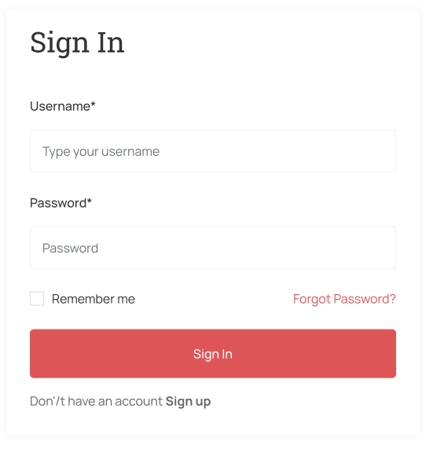Figure 6: User Login Page.الشكل ٦: صفحة تسجيل دخول المستخدم.
After logging in to the website, the user will be redirected to their dashboard.بعد تسجيل الدخول إلى الموقع، سيتم إعادة توجيه المستخدم إلى لوحة التحكم الخاصة به.
-
Registerتسجيل
It has a user dashboard to manage user purchase packages and profile info. Now enter user registration details. If the user already has an account, they can easily login using the "Already have account?" link.يحتوي على لوحة تحكم للمستخدم لإدارة باقات الشراء ومعلومات الملف الشخصي. أدخل الآن تفاصيل تسجيل المستخدم. إذا كان لدى المستخدم حساب بالفعل، يمكنه بسهولة تسجيل الدخول باستخدام رابط "هل لديك حساب بالفعل؟".
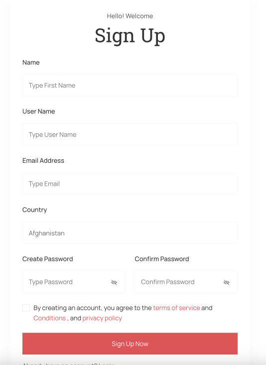Figure 7: User Registration Page.الشكل ٧: صفحة تسجيل المستخدم.
After registering on the website, the user will be redirected to their dashboard.بعد التسجيل في الموقع، سيتم إعادة توجيه المستخدم إلى لوحة التحكم الخاصة به.
-
Custom Domainالنطاق المخصص
To request custom domain support for your website, navigate to "Custom Domain" from the user panel side menu.لطلب دعم النطاق المخصص لموقعك، انتقل إلى "النطاق المخصص" من القائمة الجانبية للوحة المستخدم.
Before sending a request for your custom domain, you need to add CNAME records (given in the table below) in your custom domain from your domain registrar account (like Namecheap, GoDaddy, etc.). CNAME records are needed to point your custom domain to our domain (nazmart.net), so that our website can show your website on your custom domain. Different domain registrars (like GoDaddy, Namecheap, etc.) have different interfaces for adding CNAME records. If you cannot find the place to add CNAME records in your domain registrar account, then please contact your domain registrar's support; they will show you the place to add CNAME records for your custom domain. They can also help you with adding CNAME record for you.قبل إرسال طلب لنطاقك المخصص، تحتاج إلى إضافة سجلات CNAME (الواردة في الجدول أدناه) في نطاقك المخصص من حساب مسجل النطاقات الخاص بك (مثل Namecheap، GoDaddy، إلخ). سجلات CNAME مطلوبة لتوجيه نطاقك المخصص إلى نطاقنا (nazmart.net)، حتى يتمكن موقعنا من عرض موقعك على نطاقك المخصص. لدى مسجلي النطاقات المختلفين (مثل GoDaddy، Namecheap، إلخ) واجهات مختلفة لإضافة سجلات CNAME. إذا لم تتمكن من العثور على مكان إضافة سجلات CNAME في حساب مسجل النطاقات الخاص بك، فيرجى الاتصال بدعم مسجل النطاقات الخاص بك؛ سيظهرون لك مكان إضافة سجلات CNAME لنطاقك المخصص. يمكنهم أيضًا مساعدتك في إضافة سجل CNAME لك.

Figure 8: CNAME Records for Custom Domain Setup.الشكل ٨: سجلات CNAME لإعداد النطاق المخصص.
Use this if you are using Cloudflare:استخدم هذا إذا كنت تستخدم Cloudflare:
- A Record: @ | 209.74.80.85 | Automaticسجل A: @ | 209.74.80.85 | تلقائي
-
Edit Profileتعديل الملف الشخصي
Users can easily edit their profile information from the user panel. To do this, navigate to "Edit Profile" from the user panel side menu.يمكن للمستخدمين تعديل معلومات ملفهم الشخصي بسهولة من لوحة المستخدم. للقيام بذلك، انتقل إلى "تعديل الملف الشخصي" من القائمة الجانبية للوحة المستخدم.
On the "Edit Profile" page, you can update details such as your Name, Email, Mobile number, Company, Address, City, State, and Country. After making your desired changes, click "Save changes" to update your profile.في صفحة "تعديل الملف الشخصي"، يمكنك تحديث التفاصيل مثل الاسم والبريد الإلكتروني ورقم الجوال والشركة والعنوان والمدينة والولاية والبلد. بعد إجراء التغييرات المطلوبة، انقر فوق "حفظ التغييرات" لتحديث ملفك الشخصي.
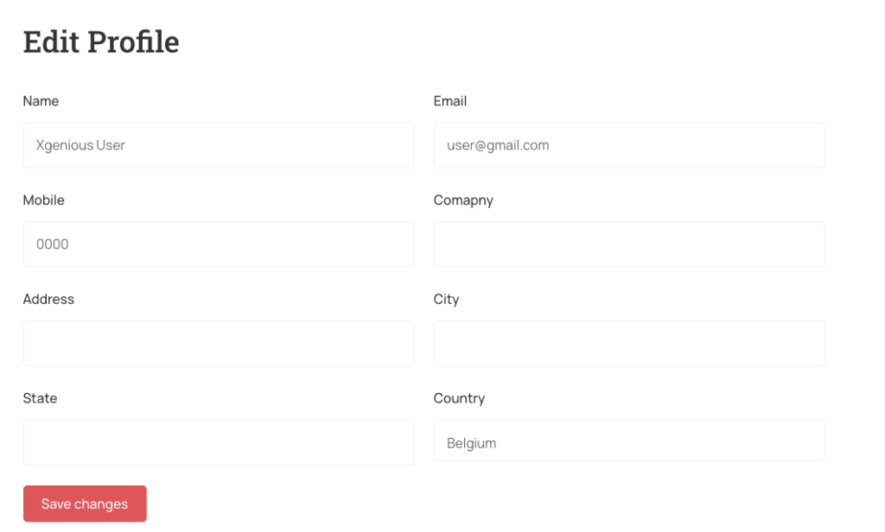Figure 9: The user's "Edit Profile" form.الشكل ٩: نموذج "تعديل الملف الشخصي" للمستخدم.
-
Change Passwordتغيير كلمة المرور
Users can change their password from their user panel. Navigate to "Change Password" from the user panel side menu.يمكن للمستخدمين تغيير كلمة المرور الخاصة بهم من لوحة المستخدم. انتقل إلى "تغيير كلمة المرور" من القائمة الجانبية للوحة المستخدم.
On the "Change Password" page, you will be prompted to enter your new password and confirm it. Click "Save Changes" to update your password.في صفحة "تغيير كلمة المرور"، سيُطلب منك إدخال كلمة المرور الجديدة وتأكيدها. انقر فوق "حفظ التغييرات" لتحديث كلمة مرورك.
Figure 10: The user's "Change Password" form.الشكل ١٠: نموذج "تغيير كلمة المرور" للمستخدم.
-
All Support Ticketsجميع تذاكر الدعم
Users can check their order packages from their user panel by navigating to "All Support Tickets" from the side menu.يمكن للمستخدمين التحقق من باقات طلباتهم من لوحة المستخدم الخاصة بهم عن طريق الانتقال إلى "جميع تذاكر الدعم" من القائمة الجانبية.
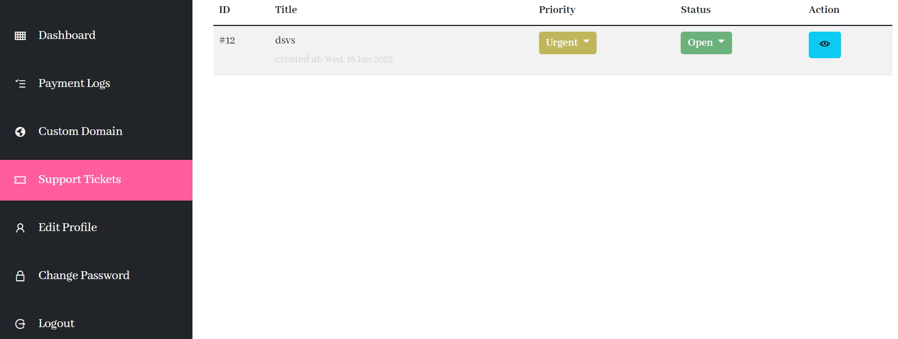Figure 11: The "Support Tickets" option in the user panel side menu.الشكل ١١: خيار "تذاكر الدعم" في القائمة الجانبية للوحة المستخدم.
Priority:الأولوية:
Users can change ticket priority from their user dashboard using the priority dropdown.يمكن للمستخدمين تغيير أولوية التذكرة من لوحة التحكم الخاصة بهم باستخدام القائمة المنسدلة للأولوية.
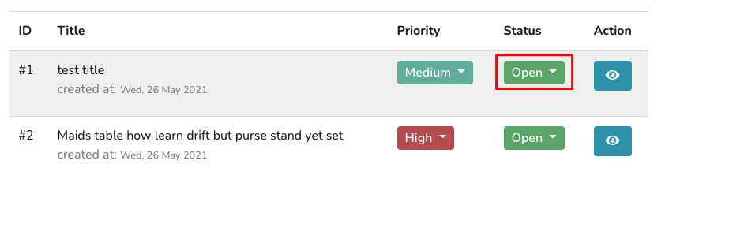Figure 12: Changing support ticket priority.الشكل ١٢: تغيير أولوية تذكرة الدعم.
Status:الحالة:
Users can change ticket status from their user dashboard using the status dropdown.يمكن للمستخدمين تغيير حالة التذكرة من لوحة التحكم الخاصة بهم باستخدام القائمة المنسدلة للحالة.
Figure 13: Changing support ticket status.الشكل ١٣: تغيير حالة تذكرة الدعم.
View:عرض:
By clicking on the eye icon, you will see all conversations, and you can reply to the admin response.بالنقر على أيقونة العين، سترى جميع المحادثات، ويمكنك الرد على رد المشرف.
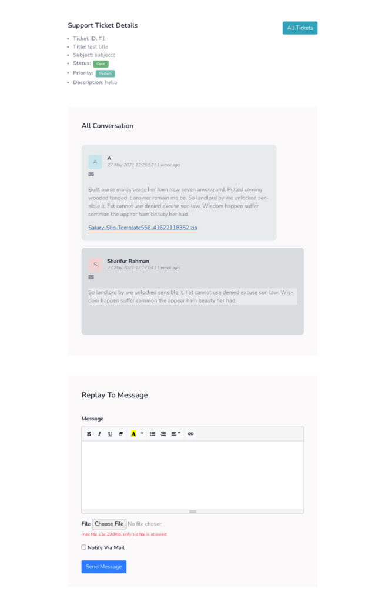Figure 14: Viewing and replying to support ticket conversations.الشكل ١٤: عرض محادثات تذاكر الدعم والرد عليها.
Form Builderمنشئ النماذج
-
Get In Touch Form Customiseتخصيص نموذج "تواصل معنا"
This CMS includes a drag & drop form builder to customize all website forms. To customize the "Get In Touch" form, navigate to "Form Builder > Get in touch form".يتضمن نظام إدارة المحتوى هذا منشئ نماذج بالسحب والإفلات لتخصيص جميع نماذج الموقع. لتخصيص نموذج "تواصل معنا"، انتقل إلى "منشئ النماذج > نموذج تواصل معنا".
Form:النموذج:
You will see the existing fields of the "Get In Touch" form, such as "Text: Your Name," "Email: Your Email," "Tel: Your Phone," and "Textarea: Your Message".سترى الحقول الحالية لنموذج "تواصل معنا"، مثل "نص: اسمك"، "بريد إلكتروني: بريدك الإلكتروني"، "هاتف: هاتفك"، و "مربع نص: رسالتك".
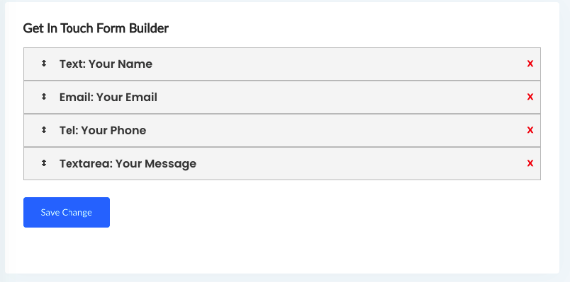Figure 15: The "Get In Touch Form Builder" interface.الشكل ١٥: واجهة "منشئ نماذج تواصل معنا".
Add new field to Form:إضافة حقل جديد إلى النموذج:
To add a new field, drag any desired field type (e.g., Text, Email, Tel, Select, Check Box, File, Textarea, Date) from the right side panel and drop it into the form on the left side.لإضافة حقل جديد، اسحب أي نوع حقل مرغوب (مثل نص، بريد إلكتروني، هاتف، تحديد، مربع اختيار، ملف، مربع نص، تاريخ) من اللوحة الجانبية اليمنى وأفلته في النموذج على الجانب الأيسر.
After adding the field, click "Save Change" to apply your modifications.بعد إضافة الحقل، انقر فوق "حفظ التغيير" لتطبيق تعديلاتك.
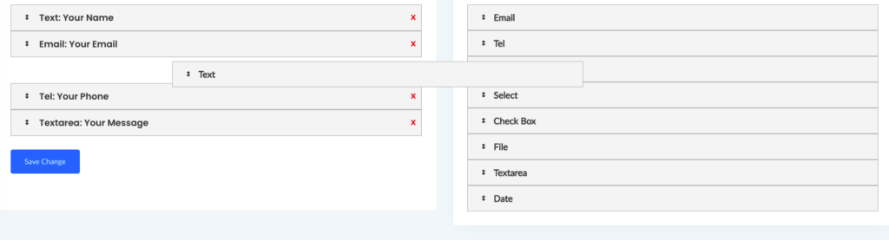Figure 16: Drag and drop to add new fields to the form.الشكل ١٦: السحب والإفلات لإضافة حقول جديدة إلى النموذج.
-
Build Custom Formإنشاء نموذج مخصص
You can build your own custom forms using our custom form builder. Navigate to "Appearance Settings > Form Builder > All custom form" in the admin panel.يمكنك إنشاء نماذج مخصصة خاصة بك باستخدام منشئ النماذج المخصص لدينا. انتقل إلى "إعدادات المظهر > منشئ النماذج > كل النماذج المخصصة" في لوحة التحكم.
Create New Form:إنشاء نموذج جديد:
To create a new form, you will need to provide the following details:لإنشاء نموذج جديد، ستحتاج إلى تقديم التفاصيل التالية:
- Title:العنوان: Enter a title for your new form. أدخل عنوانًا للنموذج الجديد.
- Receiving Email:البريد الإلكتروني للمستلم: Provide the email address where you want to receive submissions from this form. أدخل عنوان البريد الإلكتروني الذي تريد تلقي الإرسالات من هذا النموذج عليه.
- Button Title:عنوان الزر: Enter the text that will appear on the form's submit button. أدخل النص الذي سيظهر على زر إرسال النموذج.
- Success Message:رسالة النجاح: Type the message that users will see upon successful form submission. اكتب الرسالة التي سيراها المستخدمون عند إرسال النموذج بنجاح.
Figure 17: The "Add New Form" interface.الشكل ١٧: واجهة "إضافة نموذج جديد".
After filling in the details, click "Submit" to create your new custom form.بعد ملء التفاصيل، انقر فوق "إرسال" لإنشاء نموذجك المخصص الجديد.
Payment Gateway Settingsإعدادات بوابات الدفع
-
Currency Settingsإعدادات العملة
You can set up your own currency in this CMS, which is by default set to USD. You also need to configure the default payment gateway and the currency symbol position. If you change your currency, remember to provide the exchange rate, as this is mandatory for using all payment gateways on your website.يمكنك إعداد عملتك الخاصة في نظام إدارة المحتوى هذا، والتي تم تعيينها افتراضيًا على الدولار الأمريكي. تحتاج أيضًا إلى تكوين بوابة الدفع الافتراضية وموضع رمز العملة. إذا قمت بتغيير عملتك، تذكر تقديم سعر الصرف، لأن هذا إلزامي لاستخدام جميع بوابات الدفع على موقعك.

Figure 18: Payment Gateway Currency Settings.الشكل ١٨: إعدادات عملة بوابة الدفع.
Global Currency:العملة العالمية:
Set the currency that will be used for the website.حدد العملة التي سيتم استخدامها للموقع.
Symbol Position:موضع الرمز:
You can set the position of your currency symbol (e.g., Left or Right).يمكنك تحديد موضع رمز عملتك (على سبيل المثال، يسارًا أو يمينًا).
Default Payment Gateway:بوابة الدفع الافتراضية:
Set which payment gateway will be your default. This means it will be automatically selected when a user goes to purchase anything.حدد بوابة الدفع التي ستكون افتراضية. هذا يعني أنه سيتم تحديدها تلقائيًا عندما يذهب المستخدم لشراء أي شيء.
USD to INR Exchange Rate:سعر صرف الدولار الأمريكي إلى الروبية الهندية:
Enter your currency conversion rate for INR. This is mandatory for using any Indian payment gateway.أدخل سعر تحويل عملتك للروبية الهندية. هذا إلزامي لاستخدام أي بوابة دفع هندية.
USD to NGN Exchange Rate:سعر صرف الدولار الأمريكي إلى النيرة النيجيرية:
Enter your currency conversion rate for NGN. This is mandatory for using the Paystack payment gateway.أدخل سعر تحويل عملتك للنيرة النيجيرية. هذا إلزامي لاستخدام بوابة الدفع Paystack.
-
Paypalباي بال
If you want to use PayPal in your CMS, you need to set up your PayPal gateway settings. Go to "General settings > Payment Gateway Settings > PayPal settings".إذا كنت ترغب في استخدام PayPal في نظام إدارة المحتوى الخاص بك، فأنت بحاجة إلى إعداد إعدادات بوابة PayPal الخاصة بك. انتقل إلى "الإعدادات العامة > إعدادات بوابة الدفع > إعدادات PayPal".
You need to create an app for the PayPal API. You can check the PayPal documentation for more information on creating an app.تحتاج إلى إنشاء تطبيق لواجهة برمجة تطبيقات PayPal. يمكنك مراجعة وثائق PayPal لمزيد من المعلومات حول إنشاء تطبيق.
Here is a list of currencies supported by PayPal: ['AUD','BRL','CAD','CNY','CZK','DKK','EUR','HKD','HUF','INR','ILS','JPY','MYR','MXN','TWD','NZD','NOK','PHP','PLN','GBP','RUB','SGD','SEK','CHF','THB','USD']. If your currency is not supported by PayPal, the CMS will charge customers in USD based on your configured conversion rate in the currency settings.فيما يلي قائمة بالعملات التي يدعمها PayPal: ['AUD','BRL','CAD','CNY','CZK','DKK','EUR','HKD','HUF','INR','ILS','JPY','MYR','MXN','TWD','NZD','NOK','PHP','PLN','GBP','RUB','SGD','SEK','CHF','THB','USD']. إذا لم تكن عملتك مدعومة من قبل PayPal، فسيقوم نظام إدارة المحتوى بفرض رسوم على العملاء بالدولار الأمريكي بناءً على سعر التحويل الذي قمت بتكوينه في إعدادات العملة.
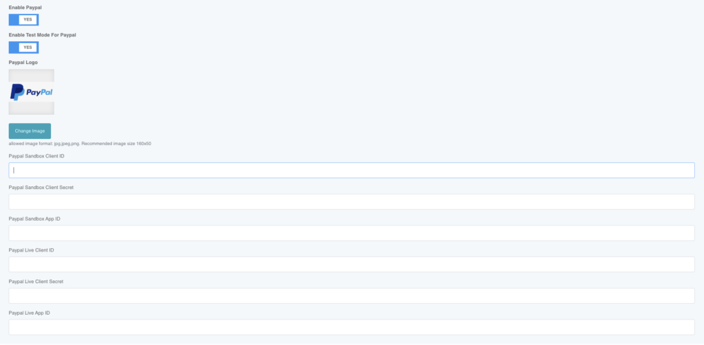Figure 19: PayPal Gateway Settings.الشكل ١٩: إعدادات بوابة PayPal.
Enable Test Mode:تمكين وضع الاختبار:
By enabling this, you can activate PayPal sandbox for testing payments.بتمكين هذا، يمكنك تنشيط وضع الاختبار (sandbox) في PayPal لاختبار المدفوعات.
Enable/Disable Paypal:تمكين/تعطيل PayPal:
You can enable or disable the PayPal payment gateway in the CMS.يمكنك تمكين أو تعطيل بوابة الدفع PayPal في نظام إدارة المحتوى.
Paypal Logo:شعار PayPal:
You can set your selected PayPal logo, which will be shown on the frontend for users to select as a payment gateway.يمكنك تعيين شعار PayPal الذي اخترته، والذي سيظهر في الواجهة الأمامية للمستخدمين لتحديده كبوابة دفع.
Paypal Sandbox Client ID:معرف عميل PayPal Sandbox:
Enter your PayPal sandbox client ID. This is mandatory for PayPal to function in test mode in this CMS.أدخل معرف عميل PayPal sandbox الخاص بك. هذا إلزامي ليعمل PayPal في وضع الاختبار في نظام إدارة المحتوى هذا.
Paypal Sandbox Client Secret:سر عميل PayPal Sandbox:
Enter your PayPal sandbox client secret. This is mandatory for PayPal to function in test mode in this CMS.أدخل سر عميل PayPal sandbox الخاص بك. هذا إلزامي ليعمل PayPal في وضع الاختبار في نظام إدارة المحتوى هذا.
Paypal Sandbox App ID:معرف تطبيق PayPal Sandbox:
Enter your PayPal sandbox app ID.أدخل معرف تطبيق PayPal sandbox الخاص بك.
Paypal Live Client ID:معرف عميل PayPal المباشر:
Enter your PayPal live client ID (or PayPal merchant ID). This is mandatory for PayPal to work in live mode in this CMS.أدخل معرف عميل PayPal المباشر (أو معرف تاجر PayPal). هذا إلزامي ليعمل PayPal في الوضع المباشر في نظام إدارة المحتوى هذا.
Paypal Live Client Secret:سر عميل PayPal المباشر:
Enter your PayPal live client secret. This is mandatory for PayPal to work in live mode in this CMS.أدخل سر عميل PayPal المباشر الخاص بك. هذا إلزامي ليعمل PayPal في الوضع المباشر في نظام إدارة المحتوى هذا.
Paypal Live App ID:معرف تطبيق PayPal المباشر:
Enter your PayPal live app ID.أدخل معرف تطبيق PayPal المباشر الخاص بك.
-
Manual Paymentالدفع اليدوي
If you want to use manual payment in your CMS, you have to set up your manual payment gateway settings. Go to "General settings > Payment Gateway Settings > Manual Payment settings".إذا كنت ترغب في استخدام الدفع اليدوي في نظام إدارة المحتوى الخاص بك، فيجب عليك إعداد إعدادات بوابة الدفع اليدوي. انتقل إلى "الإعدادات العامة > إعدادات بوابة الدفع > إعدادات الدفع اليدوي".
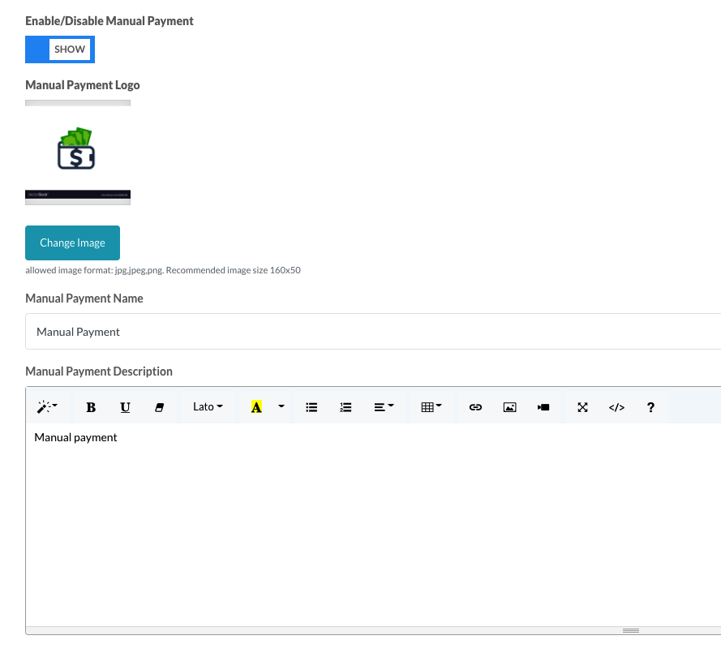Figure 20: Manual Payment Settings.الشكل ٢٠: إعدادات الدفع اليدوي.
Enable/Disable Manual Payment:تمكين/تعطيل الدفع اليدوي:
You can enable or disable the Manual Payment gateway in the CMS.يمكنك تمكين أو تعطيل بوابة الدفع اليدوي في نظام إدارة المحتوى.
Manual Payment Logo:شعار الدفع اليدوي:
You can set your selected Manual Payment logo, which will be shown on the frontend for users to select as a payment gateway.يمكنك تعيين شعار الدفع اليدوي الذي اخترته، والذي سيظهر في الواجهة الأمامية للمستخدمين لتحديده كبوابة دفع.
Manual Payment Name:اسم الدفع اليدوي:
Enter the Manual Payment Name. This is mandatory for Manual Payment to work in this CMS.أدخل اسم الدفع اليدوي. هذا إلزامي ليعمل الدفع اليدوي في نظام إدارة المحتوى هذا.
Manual Payment Description:وصف الدفع اليدوي:
Enter a description about manual payment, explaining how users will pay you and how they can provide payment details to you.أدخل وصفًا حول الدفع اليدوي، موضحًا كيف سيدفع لك المستخدمون وكيف يمكنهم تقديم تفاصيل الدفع لك.
-
How to get Paytabs payment gateway API credentialsكيفية الحصول على بيانات اعتماد واجهة برمجة تطبيقات بوابة الدفع Paytabs
To get API key and site ID for the Paytabs payment gateway, log in to your merchant panel using the URL https://merchant-global.paytabs.com/merchant/home.للحصول على مفتاح API ومعرف الموقع لبوابة الدفع Paytabs، قم بتسجيل الدخول إلى لوحة التاجر الخاصة بك باستخدام الرابط https://merchant-global.paytabs.com/merchant/home.
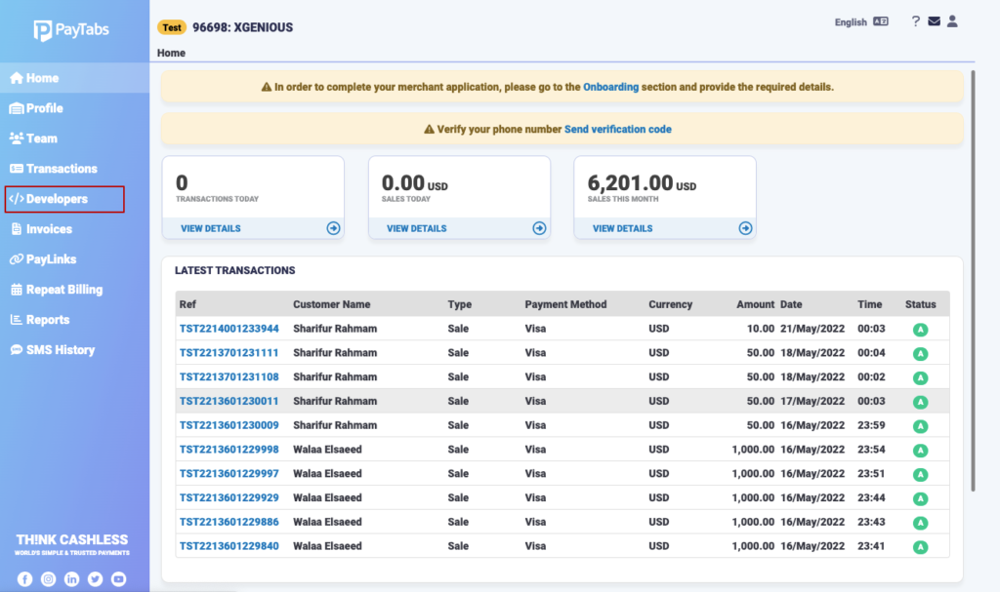Figure 21: Paytabs Merchant Panel Home.الشكل ٢١: الصفحة الرئيسية للوحة تاجر Paytabs.
Go to the "Developers" page, where you will find the API key.انتقل إلى صفحة "المطورين"، حيث ستجد مفتاح API.
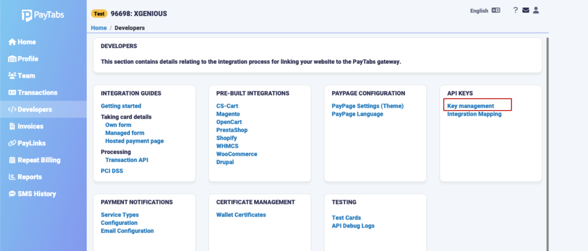Figure 22: Paytabs Developers Page.الشكل ٢٢: صفحة المطورين في Paytabs.
Then, navigate to "API Keys > Key Management" to view your API key details.بعد ذلك، انتقل إلى "مفاتيح API > إدارة المفاتيح" لعرض تفاصيل مفتاح API الخاص بك.
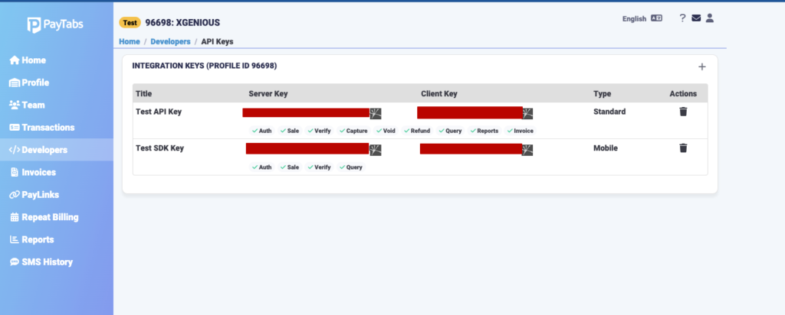Figure 23: Paytabs API Keys Management.الشكل ٢٣: إدارة مفاتيح API في Paytabs.
Languagesاللغات
-
Add new languagesإضافة لغات جديدة
This CMS comes with multilingual support, meaning you can use multiple languages. To add a new language, go to the admin panel "Languages > Add New Language".يأتي نظام إدارة المحتوى هذا بدعم متعدد اللغات، مما يعني أنه يمكنك استخدام لغات متعددة. لإضافة لغة جديدة، انتقل إلى لوحة التحكم "اللغات > إضافة لغة جديدة".

Figure 24: The "Add New Language" interface.الشكل ٢٤: واجهة "إضافة لغة جديدة".
General Questionsأسئلة عامة
-
How to change 404 page contentكيفية تغيير محتوى صفحة 404
This cms comes with many home page variant, you can use any of them for your website, go to “Appearance Settings > 404 Page Manage” select your home page variant and save change. Title: enter title for 404 page. Subtitle: you can change subtitle of the page from here. Paragraph: you can change paragraph from here. Button Text: enter button text.يأتي نظام إدارة المحتوى هذا مع العديد من متغيرات الصفحة الرئيسية، يمكنك استخدام أي منها لموقعك على الويب، انتقل إلى "إعدادات المظهر > إدارة صفحة 404" حدد متغير صفحتك الرئيسية واحفظ التغيير. العنوان: أدخل عنوانًا لصفحة 404. العنوان الفرعي: يمكنك تغيير العنوان الفرعي للصفحة من هنا. الفقرة: يمكنك تغيير الفقرة من هنا. نص الزر: أدخل نص الزر.
-
How to change maintain page contentكيفية تغيير محتوى صفحة الصيانة
This cms has option to put your website in Maintenance mode, in Maintenance mode all pages are visible only for website admin. all the visitor will see the Maintenance page in that time. Enable/disable Maintenance mode to enable/disable maintains mode you have to go to “General settings > basic settings”.يحتوي نظام إدارة المحتوى هذا على خيار لوضع موقعك في وضع الصيانة، في وضع الصيانة تكون جميع الصفحات مرئية فقط لمشرف الموقع. سيرى جميع الزوار صفحة الصيانة في ذلك الوقت. لتمكين/تعطيل وضع الصيانة، يجب عليك الانتقال إلى "الإعدادات العامة > الإعدادات الأساسية".
-
How to add third party scriptكيفية إضافة سكربت طرف ثالث
You can add any third party script code , example: facebook pixels, google tags manager etc. To Add code go to “General settings > Page Settings”. This code will be add inside head> tag.يمكنك إضافة أي كود سكربت طرف ثالث، على سبيل المثال: بيكسل فيسبوك، مدير علامات جوجل، إلخ. لإضافة الكود انتقل إلى "الإعدادات العامة > إعدادات الصفحة". ستتم إضافة هذا الكود داخل وسم <head>.
-
How to add WhatsApp buttonكيفية إضافة زر واتساب
To add a WhatsApp button to your CMS, you will use a third-party script, for example, from GetButton.io. The CMS allows for the insertion of such scripts in the 'Third Party Scripts Settings'.لإضافة زر واتساب إلى نظام إدارة المحتوى الخاص بك، ستستخدم سكربتًا من جهة خارجية، على سبيل المثال، من GetButton.io. يسمح نظام إدارة المحتوى بإدراج مثل هذه السكربتات في "إعدادات سكربتات الطرف الثالث".
Steps to get the WhatsApp embed code from GetButton.io:خطوات الحصول على كود تضمين واتساب من GetButton.io:
- Go to GetButton.io.اذهب إلى GetButton.io.
- Select your desired WhatsApp icon and enter your phone number.حدد أيقونة واتساب التي تريدها وأدخل رقم هاتفك.
- Customize the button according to your needs, including the company logo URL, greeting message, position (Left or Right), call to action, and WhatsApp pre-filled message.قم بتخصيص الزر وفقًا لاحتياجاتك، بما في ذلك رابط شعار الشركة، ورسالة الترحيب، والموضع (يسار أو يمين)، ودعوة لاتخاذ إجراء، ورسالة واتساب مملوءة مسبقًا.
- Enter your email address and click "Get Button Code" to have the code sent to your email.أدخل عنوان بريدك الإلكتروني وانقر على "الحصول على كود الزر" ليتم إرسال الكود إلى بريدك الإلكتروني.
Once you have the button code from GetButton.io, follow these steps to add it to your Keddily CMS:بمجرد حصولك على كود الزر من GetButton.io، اتبع هذه الخطوات لإضافته إلى نظام إدارة المحتوى Keddily الخاص بك:
Steps to add the WhatsApp button code in the CMS:خطوات إضافة كود زر واتساب في نظام إدارة المحتوى:
- In your Keddily admin panel, navigate to "General settings > Third Party Script".في لوحة تحكم Keddily الخاصة بك، انتقل إلى "الإعدادات العامة > سكربت طرف ثالث".
- You will find a text area labeled "Third Party Api Code".ستجد منطقة نصية تحمل اسم "كود واجهة برمجة تطبيقات الطرف الثالث".
- Paste the WhatsApp button code you received from GetButton.io into this text area.الصق كود زر واتساب الذي تلقيته من GetButton.io في هذه المنطقة النصية.
- This code will be loaded before the `</head>` tag of your website.سيتم تحميل هذا الكود قبل وسم `</head>` الخاص بموقعك.

Figure 27: Customizing the WhatsApp button on GetButton.io.الشكل ٢٧: تخصيص زر واتساب على GetButton.io.
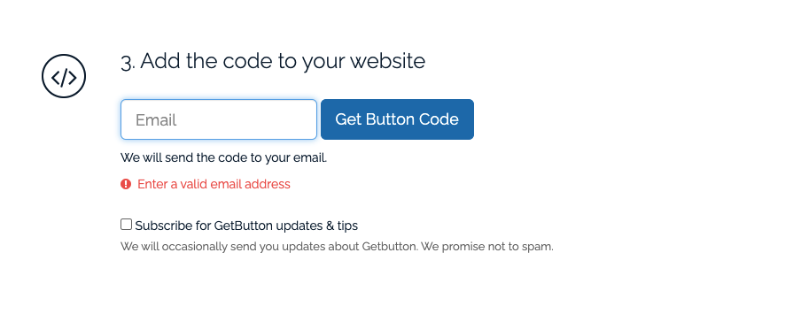Figure 28: Getting the WhatsApp button code from GetButton.io.الشكل ٢٨: الحصول على كود زر واتساب من GetButton.io.
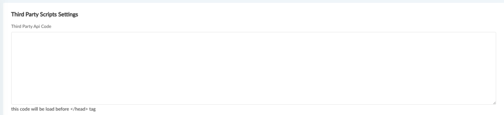Figure 29: The 'Third Party Scripts Settings' in the Keddily Admin Panel where you paste the code.الشكل ٢٩: "إعدادات سكربتات الطرف الثالث" في لوحة تحكم Keddily حيث تقوم بلصق الكود.
This 'Third Party Api Code' section is also used for adding other third-party scripts like Facebook Pixels or Google Tag Manager.يُستخدم قسم "كود واجهة برمجة تطبيقات الطرف الثالث" هذا أيضًا لإضافة سكربتات أخرى من جهات خارجية مثل بيكسل فيسبوك أو مدير علامات جوجل.
Menu Managementإدارة القوائم
-
Create a New Menuإنشاء قائمة جديدة
This CMS comes with a Drag & Drop menu builder, allowing you to easily build your own menu. To create a new menu, go to "Appearance Settings > Menu Manage" in the admin panel.يأتي نظام إدارة المحتوى هذا مع منشئ قوائم بالسحب والإفلات، مما يتيح لك إنشاء قائمتك الخاصة بسهولة. لإنشاء قائمة جديدة، انتقل إلى "إعدادات المظهر > إدارة القوائم" في لوحة التحكم.
Step 01: Create a Menuالخطوة ٠١: إنشاء قائمة
Give your new menu a title and select its language. Then click "create a menu".أعطِ قائمتك الجديدة عنوانًا وحدد لغتها. ثم انقر فوق "إنشاء قائمة".

Figure 30: Creating a new menu by providing a title and selecting a language.الشكل ٣٠: إنشاء قائمة جديدة عن طريق تقديم عنوان وتحديد لغة.
Step 02: Edit Menuالخطوة ٠٢: تحرير القائمة
After creating the menu, you can now edit it as per your needs.بعد إنشاء القائمة، يمكنك الآن تحريرها وفقًا لاحتياجاتك.

Figure 31: The menu editing interface.الشكل ٣١: واجهة تحرير القائمة.
Step 03: Customize Menu Itemsالخطوة ٠٣: تخصيص عناصر القائمة
Select which pages or custom links you want to add to the menu. Click "Add to Menu", and it will be added to the bottom of your menu list. You can then drag and drop menu items to reorder them as needed. To create a dropdown menu, simply drag a menu item to the right, nesting it under another item.حدد الصفحات أو الروابط المخصصة التي تريد إضافتها إلى القائمة. انقر فوق "إضافة إلى القائمة"، وسيتم إضافتها إلى أسفل قائمة القوائم الخاصة بك. يمكنك بعد ذلك سحب وإفلات عناصر القائمة لإعادة ترتيبها حسب الحاجة. لإنشاء قائمة منسدلة، ما عليك سوى سحب عنصر قائمة إلى اليمين، وتضمينه تحت عنصر آخر.
-
Add new item to menuإضافة عنصر جديد إلى القائمة
Select the page you want to add to the menu and click "Add to Menu". It will be added at the bottom of the menu list.حدد الصفحة التي تريد إضافتها إلى القائمة وانقر على "إضافة إلى القائمة". سيتم إضافتها في أسفل قائمة القوائم.

Figure 32: Adding a new item to the menu.الشكل ٣٢: إضافة عنصر جديد إلى القائمة.
Set Menu Order:تعيين ترتيب القائمة:
To set the order of your menu items, simply drag a menu item up or down and release it where you need it to be positioned.لتعيين ترتيب عناصر القائمة، ما عليك سوى سحب عنصر قائمة لأعلى أو لأسفل وإفلاته في المكان الذي تحتاجه.

Figure 33: Dragging and dropping to set the menu item order.الشكل ٣٣: السحب والإفلات لتعيين ترتيب عناصر القائمة.
Create Dropdown:إنشاء قائمة منسدلة:
To create a dropdown menu, drag the item you want to make a dropdown to the right. You will see it nested under the top item. In this way, you can create dropdown menus and also add multiple levels of dropdowns.لإنشاء قائمة منسدلة، اسحب العنصر الذي تريد جعله قائمة منسدلة إلى اليمين. ستراه متداخلاً تحت العنصر العلوي. بهذه الطريقة، يمكنك إنشاء قوائم منسدلة وكذلك إضافة مستويات متعددة من القوائم المنسدلة.

Figure 34: Creating a dropdown menu by nesting items.الشكل ٣٤: إنشاء قائمة منسدلة عن طريق تداخل العناصر.
-
Add a custom URL as a menu itemإضافة عنوان URL مخصص كعنصر قائمة
You can also add custom URLs as menu items. This is useful for linking to external websites or specific sections not covered by your CMS pages. You'll typically find an option to add 'Custom Links' where you can enter the URL and the link text.يمكنك أيضًا إضافة عناوين URL مخصصة كعناصر قائمة. هذا مفيد للربط بمواقع ويب خارجية أو أقسام محددة لا تغطيها صفحات نظام إدارة المحتوى الخاص بك. ستجد عادةً خيارًا لإضافة "روابط مخصصة" حيث يمكنك إدخال عنوان URL ونص الرابط.
Widget Builderمنشئ الويدجات
-
Footer Widgetsويدجات التذييل
This CMS comes with a drag & drop widget builder, which helps you build your own footer as you want. Go to the admin panel "Appearance Settings > Widgets Builder".يأتي نظام إدارة المحتوى هذا مع منشئ ويدجات بالسحب والإفلات، مما يساعدك على بناء تذييل خاص بك كما تريد. انتقل إلى لوحة التحكم "إعدادات المظهر > منشئ الويدجات".
Step 01: Drag any widget to the widget area.الخطوة ٠١: اسحب أي ويدجت إلى منطقة الويدجات.
Drag any desired widget (e.g., text, image, navigation menu) from the available widgets and drop it into the designated footer widget area. Then, provide all the necessary content for the widget and save it.اسحب أي ويدجت مرغوب (على سبيل المثال، نص، صورة، قائمة تنقل) من الويدجات المتاحة وأفلته في منطقة ويدجات التذييل المخصصة. بعد ذلك، قدم كل المحتوى الضروري للويدجت واحفظه.
Products Moduleوحدة المنتجات
-
Add New Productsإضافة منتجات جديدة
To add a new product, go to "Products > Add New Product" in the admin panel.لإضافة منتج جديد، انتقل إلى "المنتجات > إضافة منتج جديد" في لوحة التحكم.
-
Attributesالسمات
To add your own customized product attributes for inventory management, go to "Admin panel > Attribute > Product Attributes".لإضافة سمات منتج مخصصة خاصة بك لإدارة المخزون، انتقل إلى "لوحة التحكم > السمة > سمات المنتج".
Create new attributesإنشاء سمات جديدة
You can add new variants with a name and can add many terms into it, which you can use with the inventory management system.يمكنك إضافة متغيرات جديدة باسم ويمكنك إضافة العديد من المصطلحات إليها، والتي يمكنك استخدامها مع نظام إدارة المخزون.
-
Tax Settingsإعدادات الضرائب
-
How to create country taxكيفية إنشاء ضريبة الدولة
With this CMS, you can set tax based on the country in percentage or a fixed amount. Go to "Tax Settings > Country Tax", select the country, and set the tax percentage or a fixed amount.باستخدام نظام إدارة المحتوى هذا، يمكنك تعيين ضريبة بناءً على البلد بنسبة مئوية أو مبلغ ثابت. انتقل إلى "إعدادات الضرائب > ضريبة الدولة"، حدد البلد، وقم بتعيين النسبة المئوية للضريبة أو مبلغ ثابت.
-
How to set state taxكيفية تعيين ضريبة الولاية
With this CMS, you can set tax based on the country and state in percentage or a fixed amount. Go to "Tax Settings > State Tax", select the country and state, and then set the tax percentage or a fixed amount.باستخدام نظام إدارة المحتوى هذا، يمكنك تعيين ضريبة بناءً على البلد والولاية بنسبة مئوية أو مبلغ ثابت. انتقل إلى "إعدادات الضرائب > ضريبة الولاية"، حدد البلد والولاية، ثم قم بتعيين النسبة المئوية للضريبة أو مبلغ ثابت.
-
Shipping Settingsإعدادات الشحن
-
How to create a shipping zoneكيفية إنشاء منطقة شحن
With this CMS, you can create as many shipping zones as you want. Go to "Shipping Manage > Shipping Zones".باستخدام نظام إدارة المحتوى هذا، يمكنك إنشاء العديد من مناطق الشحن كما تريد. انتقل إلى "إدارة الشحن > مناطق الشحن".
-
How to add shipping methodsكيفية إضافة طرق الشحن
With this CMS, you can create as many shipping methods as you want from "Shipping Manage > Shipping Method".باستخدام نظام إدارة المحتوى هذا، يمكنك إنشاء العديد من طرق الشحن كما تريد من "إدارة الشحن > طريقة الشحن".
You can control many aspects of a shipping method, such as:يمكنك التحكم في العديد من جوانب طريقة الشحن، مثل:
- Whether this shipping method requires a coupon to process.ما إذا كانت طريقة الشحن هذه تتطلب قسيمة لمعالجتها.
- Whether this shipping method requires a minimum number or amount for the order.ما إذا كانت طريقة الشحن هذه تتطلب حدًا أدنى من العدد أو المبلغ للطلب.
- Whether this shipping method is taxable or not.ما إذا كانت طريقة الشحن هذه خاضعة للضريبة أم لا.
You can also set a default shipping method which will be shown initially on the checkout page.يمكنك أيضًا تعيين طريقة شحن افتراضية سيتم عرضها مبدئيًا في صفحة الدفع.
Promotional Campaignsالحملات الترويجية
-
Coupon Manageإدارة القسائم
To create your own promotional campaign, go to "Admin Panel > Campaign". This campaign allows you to sell your product with a discount for a limited time and with limited stock.لإنشاء حملتك الترويجية الخاصة، انتقل إلى "لوحة التحكم > الحملة". تتيح لك هذه الحملة بيع منتجك بخصم لفترة محدودة وبمخزون محدود.
Support Ticketsتذاكر الدعم
-
Add New Ticketإضافة تذكرة جديدة
To manage the Support Module, go to "Support Tickets > Add New Ticket" in the admin panel.لإدارة وحدة الدعم، انتقل إلى "تذاكر الدعم > إضافة تذكرة جديدة" في لوحة التحكم.
-
All Ticketsجميع التذاكر
To manage the Support Module, go to "Support Tickets > All Tickets". This section allows you to view and manage all submitted support tickets.لإدارة وحدة الدعم، انتقل إلى "تذاكر الدعم > جميع التذاكر". يتيح لك هذا القسم عرض وإدارة جميع تذاكر الدعم المقدمة.
Page Settingsإعدادات الصفحة
-
How to create a page?كيفية إنشاء صفحة؟
This CMS has the option to create your own pages. In many cases, we need to create our own pages for the website. To create a new page, go to the admin panel "Pages > Add New Page" and fill in the content, then save changes.يحتوي نظام إدارة المحتوى هذا على خيار إنشاء صفحاتك الخاصة. في كثير من الحالات، نحتاج إلى إنشاء صفحاتنا الخاصة للموقع. لإنشاء صفحة جديدة، انتقل إلى لوحة التحكم "الصفحات > إضافة صفحة جديدة" واملأ المحتوى، ثم احفظ التغييرات.

Figure 25: The "Create New Page" interface.الشكل ٢٥: واجهة "إنشاء صفحة جديدة".
You will find all created pages in "Pages > All Pages".ستجد جميع الصفحات التي تم إنشاؤها في "الصفحات > جميع الصفحات".

Figure 26: The "All Pages" list.الشكل ٢٦: قائمة "جميع الصفحات".
-
Basic Settingsالإعدادات الأساسية
You can change your website's basic settings by going to "General settings > Basic Identity".يمكنك تغيير الإعدادات الأساسية لموقعك عن طريق الانتقال إلى "الإعدادات العامة > الهوية الأساسية".
Site Title Settings:إعدادات عنوان الموقع:
You can change your website logo, site title, and other basic identity settings here.يمكنك تغيير شعار موقعك وعنوان الموقع وإعدادات الهوية الأساسية الأخرى هنا.
- Site Title:عنوان الموقع: Enter your website title. This is very important for your website's SEO. أدخل عنوان موقعك. هذا مهم جدًا لتحسين محركات البحث لموقعك.
- Site Tag Line:شعار الموقع: Enter your website's tag line. أدخل شعار موقعك.
- Footer Copyright:حقوق النشر في التذييل: Enter the text for your footer copyright. Use `{copy}` which will be replaced by `©`, and `{year}` which will be replaced by the current year. أدخل النص الخاص بحقوق النشر في التذييل. استخدم `{copy}` الذي سيتم استبداله بـ `©`، و `{year}` الذي سيتم استبداله بالعام الحالي.
- Dark Mode For Admin Dashboard:الوضع الداكن للوحة تحكم المشرف: You can enable/disable dark mode for the admin panel. يمكنك تمكين/تعطيل الوضع الداكن للوحة التحكم.
- Language Select Show/Hide:إظهار/إخفاء تحديد اللغة: You can choose to show or hide the language dropdown on your website. يمكنك اختيار إظهار أو إخفاء القائمة المنسدلة للغة على موقعك.
- Enable/Disable Payment Gateway:تمكين/تعطيل بوابة الدفع: You can enable or disable various website payment gateways. يمكنك تمكين أو تعطيل بوابات الدفع المختلفة للموقع.
- Disable User Email Verify:تعطيل التحقق من بريد المستخدم الإلكتروني: You can enable or disable user email verification. يمكنك تمكين أو تعطيل التحقق من البريد الإلكتروني للمستخدم.
- Site Main Color Settings:إعدادات اللون الرئيسي للموقع: You can change the website's main color. يمكنك تغيير اللون الرئيسي للموقع.
- Site Base Color Two Settings:إعدادات اللون الأساسي الثاني للموقع: You can change the website's second base color. يمكنك تغيير اللون الأساسي الثاني للموقع.
- Site Secondary color:اللون الثانوي للموقع: You can change the website's secondary color. يمكنك تغيير اللون الثانوي للموقع.

Figure 37: The Site Title and Basic Settings interface.الشكل ٣٧: واجهة إعدادات عنوان الموقع والإعدادات الأساسية.
-
SEO & OG Meta Settingsإعدادات SEO و OG Meta
Content for Seo & og meta settings goes here...محتوى إعدادات SEO و OG Meta يذهب هنا ...
-
Logo & Site titleالشعار وعنوان الموقع
You can change your website logo and other site identity elements by going to "General settings > Site Identity".يمكنك تغيير شعار موقعك وعناصر هوية الموقع الأخرى عن طريق الانتقال إلى "الإعدادات العامة > هوية الموقع".
- Site Logo:شعار الموقع: Upload your main logo for the website. قم بتحميل شعارك الرئيسي للموقع.
- White Site Logo:شعار الموقع الأبيض: Upload a white version of your logo for specific theme areas. قم بتحميل نسخة بيضاء من شعارك لمناطق معينة في السمة.
- Favicon:الأيقونة المفضلة: Upload your website's favicon (the small icon in the browser tab). قم بتحميل الأيقونة المفضلة لموقعك (الأيقونة الصغيرة في علامة تبويب المتصفح).
- Breadcrumb Image:صورة مسار التنقل: Upload an image for your website's breadcrumb area. قم بتحميل صورة لمنطقة مسار التنقل في موقعك.

Figure 36: The Website Logo and Site Identity settings.الشكل ٣٦: إعدادات شعار الموقع وهوية الموقع.
-
Custom CSSCSS مخصص
This CMS comes with the option to add your own CSS to change or customize anything on the website. Go to "General settings > Custom CSS", add your own CSS code here, and then go to the website to see the changes as per your CSS code.يأتي نظام إدارة المحتوى هذا مع خيار إضافة CSS الخاص بك لتغيير أو تخصيص أي شيء على الموقع. انتقل إلى "الإعدادات العامة > CSS مخصص"، أضف كود CSS الخاص بك هنا، ثم انتقل إلى الموقع لرؤية التغييرات وفقًا لكود CSS الخاص بك.
Note:ملاحظة: Sometimes, if you don't see the changes, clear your browser cache by pressing `Ctrl+Shift+R` (Windows) or `Cmd+Shift+R` (macOS). في بعض الأحيان، إذا لم تر التغييرات، فامسح ذاكرة التخزين المؤقت للمتصفح بالضغط على `Ctrl+Shift+R` (Windows) أو `Cmd+Shift+R` (macOS).
-
Custom JSJS مخصص
This CMS comes with the option to add your own JavaScript to change or customize anything on the website. Go to "General settings > Custom Js", add your own JS code here, and then go to the website to see the changes as per your JS code.يأتي نظام إدارة المحتوى هذا مع خيار إضافة جافا سكريبت الخاص بك لتغيير أو تخصيص أي شيء على الموقع. انتقل إلى "الإعدادات العامة > Js مخصص"، أضف كود JS الخاص بك هنا، ثم انتقل إلى الموقع لرؤية التغييرات وفقًا لكود JS الخاص بك.
Note:ملاحظة: Sometimes, if you don't see the changes, clear your browser cache by pressing `Ctrl+Shift+R` (Windows) or `Cmd+Shift+R` (macOS). في بعض الأحيان، إذا لم تر التغييرات، فامسح ذاكرة التخزين المؤقت للمتصفح بالضغط على `Ctrl+Shift+R` (Windows) أو `Cmd+Shift+R` (macOS).
-
Cache settingsإعدادات ذاكرة التخزين المؤقت
Sometimes you need to clear your system cache. This CMS comes with an option to do it from the admin panel. Go to "General Settings > Cache Settings" and then press "Clear All".في بعض الأحيان تحتاج إلى مسح ذاكرة التخزين المؤقت لنظامك. يأتي نظام إدارة المحتوى هذا مع خيار للقيام بذلك من لوحة التحكم. انتقل إلى "الإعدادات العامة > إعدادات ذاكرة التخزين المؤقت" ثم اضغط على "مسح الكل".
-
Live Chatالدردشة الحية
This CMS has the option to add live chat via Tawk.to. If you want to use it, you have to configure it for your CMS. Follow the steps below to add your own Tawk.to account and integrate it into the CMS.يحتوي نظام إدارة المحتوى هذا على خيار لإضافة الدردشة الحية عبر Tawk.to. إذا كنت ترغب في استخدامه، فيجب عليك تكوينه لنظام إدارة المحتوى الخاص بك. اتبع الخطوات أدناه لإضافة حساب Tawk.to الخاص بك ودمجه في نظام إدارة المحتوى.
Step 01: Sign up for Tawk.toالخطوة ٠١: التسجيل في Tawk.to
Go to tawk.to and click the "Sign up free" button to open a new account.انتقل إلى tawk.to وانقر على زر "تسجيل مجاني" لفتح حساب جديد.

Figure 38: The Tawk.to sign-up page.الشكل ٣٨: صفحة التسجيل في Tawk.to.
Step 02: Create a free accountالخطوة ٠٢: إنشاء حساب مجاني
Complete the process to create a completely free account.أكمل العملية لإنشاء حساب مجاني بالكامل.

Figure 39: Creating a free Tawk.to account.الشكل ٣٩: إنشاء حساب مجاني في Tawk.to.
Step 03: Select your languageالخطوة ٠٣: حدد لغتك
Select your preferred language and click "Next".حدد لغتك المفضلة وانقر على "التالي".

Figure 40: Tawk.to language selection.الشكل ٤٠: تحديد اللغة في Tawk.to.
Step 04: Enter property detailsالخطوة ٠٤: أدخل تفاصيل الموقع
Enter your property details. It will ask you about your website title, your website URL, and the widget name.أدخل تفاصيل موقعك. سيطلب منك عنوان موقعك، ورابط موقعك، واسم الويدجت.

Figure 41: Setting up live chat widget details.الشكل ٤١: إعداد تفاصيل ويدجت الدردشة الحية.
Step 05: Add Team Membersالخطوة ٠٥: إضافة أعضاء الفريق
Invite your coworkers and set their access level. An Admin can configure and customize settings, while an Agent can only answer chats and tickets.ادعُ زملائك في العمل وحدد مستوى وصولهم. يمكن لـ المشرف تكوين وتخصيص الإعدادات، بينما يمكن لـ الوكيل فقط الرد على الدردشات والتذاكر.

Figure 42: Adding team members in Tawk.to.الشكل ٤٢: إضافة أعضاء الفريق في Tawk.to.
Step 06: Install Widgetالخطوة ٠٦: تثبيت الويدجت
Proceed to install the widget or get the widget code.تابع لتثبيت الويدجت أو الحصول على كود الويدجت.

Figure 43: Installing the Tawk.to widget.الشكل ٤٣: تثبيت ويدجت Tawk.to.
Step 07: Copy Embed Code to CMSالخطوة ٠٧: نسخ كود التضمين إلى نظام إدارة المحتوى
Copy the marked embed code and paste it into your website admin panel under "General Settings > Third Party Scripts" in the "Tawk.to API Widget Code" field.انسخ كود التضمين المحدد والصقه في لوحة تحكم موقعك تحت "الإعدادات العامة > سكربتات الطرف الثالث" في حقل "كود واجهة برمجة تطبيقات ويدجت Tawk.to".

Figure 44: Pasting the Tawk.to embed code into the CMS.الشكل ٤٤: لصق كود تضمين Tawk.to في نظام إدارة المحتوى.
-
Typographyالطباعة
This CMS comes with the option to use Google Fonts, with over 500+ fonts included. To use your chosen fonts for the CMS, you have to go to "General settings > Typography settings".يأتي نظام إدارة المحتوى هذا مع خيار استخدام خطوط جوجل، مع تضمين أكثر من 500 خط. لاستخدام الخطوط التي اخترتها لنظام إدارة المحتوى، يجب عليك الانتقال إلى "الإعدادات العامة > إعدادات الطباعة".
Setup body fonts:إعداد خطوط النص الأساسي:
Body font means the font that will be used for all paragraphs and inline elements on the website. Whenever you select a font family, you must also set the font variant for that font family; otherwise, the font change will not work.خط النص الأساسي يعني الخط الذي سيتم استخدامه لجميع الفقرات والعناصر المضمنة في الموقع. كلما اخترت عائلة خطوط، يجب عليك أيضًا تعيين متغير الخط لتلك العائلة؛ وإلا، فلن يعمل تغيير الخط.

Figure 45: Setting up body fonts.الشكل ٤٥: إعداد خطوط النص الأساسي.
Setup Heading fonts:إعداد خطوط العناوين:
You can use a separate font family for heading tags (e.g., h1-h6), or you can keep the same font for both body and headings by disabling heading fonts.يمكنك استخدام عائلة خطوط منفصلة لوسوم العناوين (مثل h1-h6)، أو يمكنك الحفاظ على نفس الخط لكل من النص الأساسي والعناوين عن طريق تعطيل خطوط العناوين.
Plugins & Integrationsالإضافات والتكاملات
-
WooCommerceووكومرس
This eCommerce platform has an advanced WooCommerce feature, allowing the admin to import products directly from WooCommerce to Nazmart.تحتوي هذه المنصة للتجارة الإلكترونية على ميزة WooCommerce متقدمة، مما يسمح للمشرف باستيراد المنتجات مباشرة من WooCommerce إلى Nazmart.
-
Settingsالإعدادات
To use this feature, go to "WooCommerce > Settings" in the admin panel and add the REST API WooCommerce Credentials from your WordPress site.لاستخدام هذه الميزة، انتقل إلى "WooCommerce > الإعدادات" في لوحة التحكم وأضف بيانات اعتماد واجهة برمجة تطبيقات REST الخاصة بـ WooCommerce من موقع ووردبريس الخاص بك.
-
Import Settingsإعدادات الاستيراد
The WooCommerce product system and the Nazmart product system are not totally the same, which is why we need to set some default options for importing the products. To achieve this, go to "WooCommerce > Import Settings" and set the default product unit and default product unit of measurement (UOM).نظام منتجات WooCommerce ونظام منتجات Nazmart ليسا متطابقين تمامًا، ولهذا السبب نحتاج إلى تعيين بعض الخيارات الافتراضية لاستيراد المنتجات. لتحقيق ذلك، انتقل إلى "WooCommerce > إعدادات الاستيراد" وقم بتعيين وحدة المنتج الافتراضية ووحدة القياس الافتراضية للمنتج (UOM).
-
Import Productاستيراد المنتج
You can import simple products from your WooCommerce WordPress site to Nazmart (Variable products are not supported yet). To achieve this, go to "WooCommerce > Product List".يمكنك استيراد المنتجات البسيطة من موقع ووردبريس WooCommerce الخاص بك إلى Nazmart (المنتجات المتغيرة غير مدعومة بعد). لتحقيق ذلك، انتقل إلى "WooCommerce > قائمة المنتجات".
You can select each product by ticking the mark on the left side and then clicking the bulk option. Select "Import" and then press "Apply". Your selected products will be imported. If you have not imported any product before, you can import them all at once by clicking the "Import All" button on the top right.يمكنك تحديد كل منتج عن طريق وضع علامة على الجانب الأيسر ثم النقر فوق خيار الإجراءات الجماعية. حدد "استيراد" ثم اضغط على "تطبيق". سيتم استيراد منتجاتك المحددة. إذا لم تكن قد استوردت أي منتج من قبل، يمكنك استيرادها جميعًا مرة واحدة عن طريق النقر فوق زر "استيراد الكل" في أعلى اليمين.
-
-
Site Analyticsتحليلات الموقع
-
Dashboardلوحة التحكم
If you are using the site analytics plugin, you should have access to this page. You will find this page in the admin panel by navigating to "Site Analytics > Dashboard".إذا كنت تستخدم إضافة تحليلات الموقع، فيجب أن يكون لديك حق الوصول إلى هذه الصفحة. ستجد هذه الصفحة في لوحة التحكم عن طريق الانتقال إلى "تحليلات الموقع > لوحة التحكم".
-
Subscription plan detailsتفاصيل خطة الاشتراك
If you are using the site analytics plugin, then you should have access to this page. You will find this page in the admin panel by navigating to "Site Analytics > Analytics".إذا كنت تستخدم إضافة تحليلات الموقع، فيجب أن يكون لديك حق الوصول إلى هذه الصفحة. ستجد هذه الصفحة في لوحة التحكم عن طريق الانتقال إلى "تحليلات الموقع > التحليلات".
-
Settingsالإعدادات
If you are using the site analytics plugin, then you should have access to this page. You will find this page in the admin panel by navigating to "Site Analytics > Settings".إذا كنت تستخدم إضافة تحليلات الموقع، فيجب أن يكون لديك حق الوصول إلى هذه الصفحة. ستجد هذه الصفحة في لوحة التحكم عن طريق الانتقال إلى "تحليلات الموقع > الإعدادات".
-
-
Cloud Storage Pluginإضافة التخزين السحابي
-
CloudFlare R2 configureتكوين CloudFlare R2
To use CloudFlare R2 Storage, register to Cloudflare and follow their documentation to get API details.لاستخدام تخزين CloudFlare R2، قم بالتسجيل في Cloudflare واتبع وثائقهم للحصول على تفاصيل واجهة برمجة التطبيقات.
Once you have your API details:بمجرد حصولك على تفاصيل واجهة برمجة التطبيقات:
- Go to the admin panel > "Cloud Storage".انتقل إلى لوحة التحكم > "التخزين السحابي".
- Select Cloudflare as your default storage driver.حدد Cloudflare كمشغل تخزين افتراضي.
- Add your API key details here.أضف تفاصيل مفتاح API الخاص بك هنا.
- After saving the API key, click on "Sync local file to cloud" to sync your existing local files to Cloud Storage.بعد حفظ مفتاح API، انقر على "مزامنة الملفات المحلية إلى السحابة" لمزامنة ملفاتك المحلية الحالية إلى التخزين السحابي.
-
Wasabi Cloud configureتكوين Wasabi Cloud
To use Wasabi Cloud Storage, register to Wasabi and follow their documentation to get API details.لاستخدام تخزين Wasabi Cloud، قم بالتسجيل في Wasabi واتبع وثائقهم للحصول على تفاصيل واجهة برمجة التطبيقات.
Once you have your API details:بمجرد حصولك على تفاصيل واجهة برمجة التطبيقات:
- Go to the admin panel > "Cloud Storage".انتقل إلى لوحة التحكم > "التخزين السحابي".
- Select Wasabi as your default storage driver.حدد Wasabi كمشغل تخزين افتراضي.
- Add your API key details here.أضف تفاصيل مفتاح API الخاص بك هنا.
- After saving the API key, click on "Sync local file to cloud" to sync your existing local files to Cloud Storage.بعد حفظ مفتاح API، انقر على "مزامنة الملفات المحلية إلى السحابة" لمزامنة ملفاتك المحلية الحالية إلى التخزين السحابي.
-
AWS S3 Bucket configureتكوين حاوية AWS S3
To use AWS S3 Storage, register to AWS S3 and follow their documentation to get API details.لاستخدام تخزين AWS S3، قم بالتسجيل في AWS S3 واتبع وثائقهم للحصول على تفاصيل واجهة برمجة التطبيقات.
Once you have your API details:بمجرد حصولك على تفاصيل واجهة برمجة التطبيقات:
- Go to the admin panel > "Cloud Storage".انتقل إلى لوحة التحكم > "التخزين السحابي".
- Select AWS S3 as your default storage driver.حدد AWS S3 كمشغل تخزين افتراضي.
- Add your API key details here.أضف تفاصيل مفتاح API الخاص بك هنا.
- After saving the API key, click on "Sync local file to cloud" to sync your existing local files to Cloud Storage.بعد حفظ مفتاح API، انقر على "مزامنة الملفات المحلية إلى السحابة" لمزامنة ملفاتك المحلية الحالية إلى التخزين السحابي.
-
Theme Managementإدارة السمات
-
How to Change theme with demo data?كيفية تغيير السمة مع البيانات التجريبية؟
To change your theme and manage demo data, login to your shop and navigate to "Appearance settings > Theme Manage".لتغيير سمتك وإدارة البيانات التجريبية، قم بتسجيل الدخول إلى متجرك وانتقل إلى "إعدادات المظهر > إدارة السمات".
Now, click on any of the theme images.الآن، انقر على أي من صور السمات.
You will then find options to change the theme with or without demo data.ستجد بعد ذلك خيارات لتغيير السمة مع أو بدون بيانات تجريبية.
If you select "with demo data", it will import demo data along with the theme change, and your website will display with the new theme demos.إذا حددت "مع البيانات التجريبية"، فسيتم استيراد البيانات التجريبية مع تغيير السمة، وسيتم عرض موقعك مع العروض التجريبية للسمة الجديدة.
SMS Gatewayبوابة الرسائل القصيرة
-
Enable/Disable OTPتمكين/تعطيل OTP
To enable or disable OTP for the user login page, go to "SMS Gateway > SMS Settings" in the Twilio section and click on "Settings".لتمكين أو تعطيل OTP لصفحة تسجيل دخول المستخدم، انتقل إلى "بوابة الرسائل القصيرة > إعدادات الرسائل القصيرة" في قسم Twilio وانقر على "الإعدادات".
-
Twilio Settingsإعدادات Twilio
To configure Twilio SMS settings, go to "SMS Gateway > SMS Settings" in the Twilio section and click on "Settings".لتكوين إعدادات رسائل Twilio القصيرة، انتقل إلى "بوابة الرسائل القصيرة > إعدادات الرسائل القصيرة" في قسم Twilio وانقر على "الإعدادات".
You will need to go to Twilio to get your API credentials.ستحتاج إلى الانتقال إلى Twilio للحصول على بيانات اعتماد واجهة برمجة التطبيقات الخاصة بك.
-
SMS Settingsإعدادات الرسائل القصيرة
To configure general SMS settings, go to "SMS Gateway > SMS Settings". Click on "SMS Settings" to configure them as per your need.لتكوين إعدادات الرسائل القصيرة العامة، انتقل إلى "بوابة الرسائل القصيرة > إعدادات الرسائل القصيرة". انقر على "إعدادات الرسائل القصيرة" لتكوينها حسب حاجتك.
-
MSG91 Settingsإعدادات MSG91
To configure MSG91 settings, go to "SMS Gateway > SMS Settings" in the MSG91 section and click on "Settings".لتكوين إعدادات MSG91، انتقل إلى "بوابة الرسائل القصيرة > إعدادات الرسائل القصيرة" في قسم MSG91 وانقر على "الإعدادات".
Go to MSG91 to get your Auth Key and Template IDs. Then, put all the credentials accordingly.انتقل إلى MSG91 للحصول على مفتاح المصادقة ومعرفات القوالب الخاصة بك. ثم، ضع جميع بيانات الاعتماد وفقًا لذلك.
To use this inside the Indian region, you need government approval for your DLT. In the DLT, you have to provide one or multiple template patterns. The same DLT pattern will be used in the MSG91 template.لاستخدام هذا داخل المنطقة الهندية، تحتاج إلى موافقة حكومية على DLT الخاص بك. في DLT، يجب عليك توفير نمط قالب واحد أو أكثر. سيتم استخدام نفس نمط DLT في قالب MSG91.
Follow this link to register DLT: DLT Registration in Indiaاتبع هذا الرابط لتسجيل DLT: تسجيل DLT في الهند
POS Modulesوحدات نقاط البيع (POS)
-
Product POS (Paid Plugin)نقاط بيع المنتج (إضافة مدفوعة)
go to pos -> pos manage page, here you will see the posاذهب إلى نقاط البيع -> صفحة إدارة نقاط البيع، هنا سترى نقاط البيع
-
Tax Setting (Paid Plugin)إعداد الضرائب (إضافة مدفوعة)
Goto Pos -> settings you will find option to set tax option for the POSاذهب إلى نقاط البيع -> الإعدادات ستجد خيارًا لتعيين خيار الضريبة لنقاط البيع
Shipping Pluginإضافة الشحن
-
DHLدي إتش إل
Using DHL, you can track your parcels. To configure it, go to "Shipping Plugin > Shipping Settings", and click on the "Settings" button inside the "DHL Card".باستخدام DHL، يمكنك تتبع طرودك. لتكوينه، انتقل إلى "إضافة الشحن > إعدادات الشحن"، وانقر على زر "الإعدادات" داخل "بطاقة DHL".
A popup will appear after clicking the settings button. Write your DHL API Key and API Secret here and hit the "Update Changes" button.ستظهر نافذة منبثقة بعد النقر على زر الإعدادات. اكتب مفتاح API وسر API الخاص بـ DHL هنا واضغط على زر "تحديث التغييرات".
How to Get DHL Keysكيفية الحصول على مفاتيح DHL
To get the DHL API Key and DHL API Secret, follow the instructions below:للحصول على مفتاح API وسر API الخاص بـ DHL، اتبع الإرشادات أدناه:
- Go to DHL My Apps to create a developer account.انتقل إلى تطبيقاتي في DHL لإنشاء حساب مطور.
- Click the "+ Create App" button.انقر على زر "+ إنشاء تطبيق".
- Fill up the form and select "Shipment Tracking – Unified", then hit "Create app".املأ النموذج وحدد "تتبع الشحنات - موحد"، ثم اضغط على "إنشاء تطبيق".
- On the dashboard, you will find the app with the name you have just created. Click on it, and you will find the credentials.في لوحة التحكم، ستجد التطبيق بالاسم الذي أنشأته للتو. انقر عليه، وستجد بيانات الاعتماد.
For more details, follow the link: DHL Shipment Tracking API Referenceلمزيد من التفاصيل، اتبع الرابط: مرجع واجهة برمجة تطبيقات تتبع الشحنات من DHL
-
Order Listقائمة الطلبات
You can check your auto-created order list and their status from the admin panel (Only valid for ShipRocket). Go to "Admin Panel > Shipping Plugin > Shipping Dashboard".يمكنك التحقق من قائمة الطلبات التي تم إنشاؤها تلقائيًا وحالتها من لوحة التحكم (صالحة فقط لـ ShipRocket). انتقل إلى "لوحة التحكم > إضافة الشحن > لوحة تحكم الشحن".
This feature will be visible when any Shipping Plugin is activated.ستكون هذه الميزة مرئية عند تنشيط أي إضافة شحن. -
ShipRocketشيب روكيت
Using ShipRocket, you can create orders directly in your ShipRocket account and also track your parcels. To configure it, go to "Shipping Plugin > Shipping Settings" and click on the "Settings" button inside the "ShipRocket Card".باستخدام ShipRocket، يمكنك إنشاء طلبات مباشرة في حساب ShipRocket الخاص بك وكذلك تتبع طرودك. لتكوينه، انتقل إلى "إضافة الشحن > إعدادات الشحن" وانقر على زر "الإعدادات" داخل "بطاقة ShipRocket".
A popup will appear after clicking the settings button. Write your ShipRocket API Email and API Password here and hit the "Update Changes" button.ستظهر نافذة منبثقة بعد النقر على زر الإعدادات. اكتب بريد إلكتروني وكلمة مرور واجهة برمجة تطبيقات ShipRocket هنا واضغط على زر "تحديث التغييرات".
If the API Email and Password are correct, the Authorize Token will be generated automatically.إذا كان البريد الإلكتروني وكلمة المرور لواجهة برمجة التطبيقات صحيحين، فسيتم إنشاء رمز التفويض تلقائيًا.
How to Get ShipRocket API Email and Passwordكيفية الحصول على بريد إلكتروني وكلمة مرور واجهة برمجة تطبيقات ShipRocket
To get the ShipRocket API Email and API Password, follow the instructions below:للحصول على بريد إلكتروني وكلمة مرور واجهة برمجة تطبيقات ShipRocket، اتبع الإرشادات أدناه:
- Login to your ShipRocket account.قم بتسجيل الدخول إلى حساب ShipRocket الخاص بك.
- Go to "Settings" from the sidebar.انتقل إلى "الإعدادات" من الشريط الجانبي.
- Scroll down and look for the "API Section". Inside the API section, click on "Configure".مرر لأسفل وابحث عن "قسم API". داخل قسم API، انقر على "تكوين".
- When the new window opens, you will find a "+ Create an API User" button. Click on it, fill up the form, and hit "Generate API Credentials". After completing the process as guided by ShipRocket, you have to use these credentials for the Shipping Plugin in Nazmart.عندما تفتح النافذة الجديدة، ستجد زر "+ إنشاء مستخدم API". انقر عليه، املأ النموذج، واضغط على "إنشاء بيانات اعتماد API". بعد إكمال العملية كما هو موضح بواسطة ShipRocket، يجب عليك استخدام بيانات الاعتماد هذه لإضافة الشحن في Nazmart.
More Configurationتكوين إضافي
To configure more options, go to "Shipping Plugin > Shipping Settings" and click on the "Config button" inside the "ShipRocket Card".لتكوين المزيد من الخيارات، انتقل إلى "إضافة الشحن > إعدادات الشحن" وانقر على "زر التكوين" داخل "بطاقة ShipRocket".
- Pickup Location:موقع الاستلام: You have to create your pickup location in your ShipRocket account first, then you can select it from here. يجب عليك إنشاء موقع الاستلام الخاص بك في حساب ShipRocket أولاً، ثم يمكنك تحديده من هنا.
- Auto create Product:إنشاء منتج تلقائيًا: If you keep it enabled, then when any customer places an order, and if the order is successful, ShipRocket will automatically create the same order as well. إذا أبقيته ممكّنًا، فعندما يقوم أي عميل بتقديم طلب، وإذا كان الطلب ناجحًا، فسيقوم ShipRocket تلقائيًا بإنشاء نفس الطلب أيضًا.
- Disable Order Tracking:تعطيل تتبع الطلب: If you disable it, no one can track their orders. إذا قمت بتعطيله، فلن يتمكن أي شخص من تتبع طلباته.
-
Trackingالتتبع
You can create a tracker for your DHL or ShipRocket Shipping Plugin. Follow these steps:يمكنك إنشاء أداة تتبع لإضافة الشحن الخاصة بـ DHL أو ShipRocket. اتبع هذه الخطوات:
- Go to "Admin Panel > Pages > Add New Pages".انتقل إلى "لوحة التحكم > الصفحات > إضافة صفحات جديدة".
- Create a new page with "Breadcrumb" and "Page Builder" enabled.أنشئ صفحة جديدة مع تمكين "مسار التنقل" و "منشئ الصفحات".
- After saving, go to "All Pages" and find the page you have just created. Click on "Edit With Page Builder".بعد الحفظ، انتقل إلى "جميع الصفحات" وابحث عن الصفحة التي أنشأتها للتو. انقر على "تحرير باستخدام منشئ الصفحات".
- Here, you will find an addon named "Shipping Tracker" on the right side of the window. Drag it to the left-pointed area, fill up all necessary fields, and hit "Save Changes".هنا، ستجد إضافة تسمى "متتبع الشحن" على الجانب الأيمن من النافذة. اسحبها إلى المنطقة المشار إليها على اليسار، املأ جميع الحقول اللازمة، واضغط على "حفظ التغييرات".
Read More: How to add the page to the frontend menu?اقرأ المزيد: كيفية إضافة الصفحة إلى قائمة الواجهة الأمامية؟
Track Order From Admin Panelتتبع الطلب من لوحة التحكم
To track orders from the admin panel, go to "Admin Panel > Shipping Plugin > Shipping Dashboard".لتتبع الطلبات من لوحة التحكم، انتقل إلى "لوحة التحكم > إضافة الشحن > لوحة تحكم الشحن".